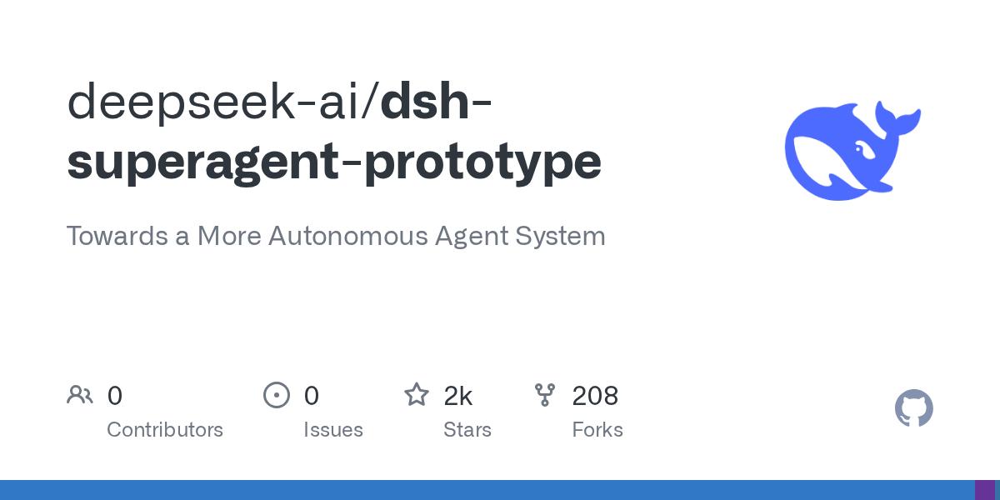
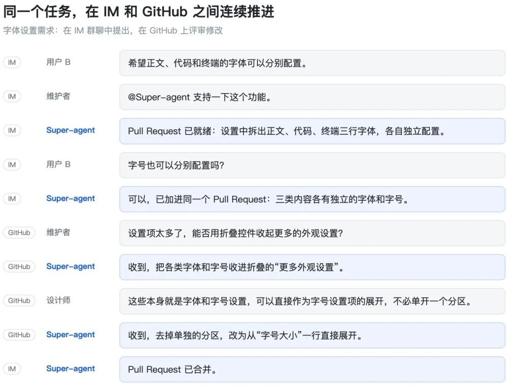
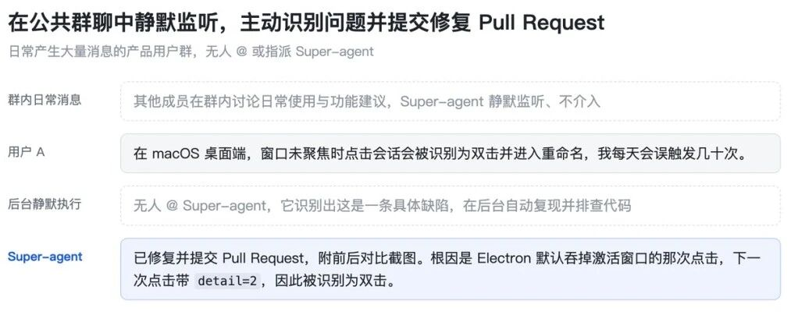

Agent 系统DeepSeek Harness 团队公布 Super-agent 架构，并开源研究原型 dsh-superagent-prototype（MIT）
1. 发生了什么
北京时间 2026-10-31 晚，DeepSeek Harness 团队公开设计长文《Super-agent 设计探索：迈向更自主的 Agent 系统》，并在 GitHub 开源 dsh-superagent-prototype（仓库创建 UTC 2026-10-31T09:32:46Z，许可证 MIT）。量子位同日 21:49 发出中文首波解读；智东西、IT之家、极客公园早知道、虎嗅在 10-31 夜至 11-01 凌晨跟进。
官方定位非常清楚（README 原文大意）：这是研究原型，仅供参考，不是正式 DeepSeek 产品；公开版与内部实现、以及设计长文描述不完全一致；长文里部分设想属于未来方向，原型未实现。
一手：GitHub · dsh-superagent-prototype（成稿核验约 2485★ / 217 forks）· Harness EN / 中文 · 中文媒体：量子位 10-31 21:49 · 智东西 11-01 · IT之家 10-31 21:36 · 虎嗅 11-01 03:15 · 极客公园早知道
mp.weixin.qq.com/s/zoS7GlReWPhfCjENGxXCdg，本机抓取被验证码拦截；以下事实交叉自量子位、智东西转载叙述与 GitHub README，不假装「已全文核对微信原页」。2. 产品介绍
它想解决什么：Coding Agent 单任务能力上来之后，人越来越少介入底层执行，但多任务仍要人记住「哪个 Session 走到哪」。团队观察：人通常只能同时跟进约 3–5 个活跃 Session。瓶颈从模型能力转向人的注意力。
Super-agent 四特征（长文主张）：
- 连续：在 IM / GitHub 等熟悉界面始终像「同一个 Agent」，不必自己拼跨 Session 上下文。
- 高效：多复杂任务并行；不必等上一任务结束才能接新指令。
- 主动：持续观察环境事件；该出手时出手，不该打扰时安静。
- 持久：长期在线；异常时尝试自动恢复。
公开原型实际长什么样（README）：挂在 DeepSeek Harness 上的「单 GitHub 仓库主动编程 Agent」插件；监听 GitHub，可选飞书；授权用户请求后创建工作项，在独立 Agent Session / 目录里干活，并在原对话回复（例如开 PR）；另有 Web 面板标出需要人工介入的事项。理念一句话：尽量少占人的注意力，尽量多交付价值。

双层架构：Router 分派，Worker 干活
跨信道连续 vs 多任务吞吐是一对矛盾。解法是拆两层：
- Router：常驻、轻量；只做人类交互、全局协调与任务分派，甚至可以不配 Bash；用批处理摊薄突发事件成本。
- Worker：强模型、上下文隔离；挂完整工具链执行单任务；不直接对外抢话，状态回报 Router，由 Router 统一回复用户。
订阅 / 直通：Worker 订阅某个 Thread（例如同一 PR 下的连续评论）后，后续事件由程序直送该 Worker，不再每条都绕 Router。去掉直通后，完成时间差不多，但 Router 决定数约 +30%，读缓存 token 从约 2323 万 → 3177 万（约 +37%）。




其余模块（长文，原型未必全开）
- 两级事件过滤：程序 Fast Path 先按来源/白名单筛噪 → 模型 Slow Path 做语义判断。
- Inline & Spill + 链式召回：把上下文窗口当 Cache；对象带 ID，按需多跳展开。
- 存算分离：Agent Loop 计算、持久状态、执行环境解耦；叙事上对齐 Anthropic「脑手分离」，但场景更强调接入间歇在线的个人开发机（BYOM）。
- 外部 Watchdog：独立 Session 盯基础设施存活 + 任务是否实质进展/偏离目标。
初步实验（官方自报，合成负载）
约 300 条消息 / 20 条工作请求，编码用耗时工具代替，各方案跑 5 次：
- Super-agent：p50=12.4 分钟，p95=15.7 分钟
- 带 Subagent 的单 Session、中性提示：几乎不委派，被新消息打断，p95=29.5 分钟
- Router 批处理压测：单决定分摊推理时间约 6.4s → 1.6s


视频：窗内未见官方可嵌的独立演示片；本版不硬塞无关视频，以架构图 + 用例图为准。
3. 导致什么影响（含竞品）
- vs Claude Code / Claude Duet：Claude Code 强在单会话深度工程与需确认的主动找活；Duet（seen 10-22 已报）是产品预览级个人 Agent App。DeepSeek 这次强调的是跨信道 Router/Worker + 事件订阅的系统层，并开源可自托管原型——品类是「Harness / 调度哲学」，不是又一个聊天 App。
- vs Factory Droid 1.0：Droid 是闭源企业 harness，默认 programmatic/Script 工具调用、多模型效率叙事（官文 frontier harness）。DeepSeek 开的是 Harness 插件式研究原型 + Super-agent 调度主张，开放度高、产品完成度明确标低。
- vs OpenAI Codex / Cursor：偏 IDE/沙箱单任务或并行 agent 编排；Super-agent 主打 IM + GitHub 连续实体，并把「人注意力」写成一等约束。社区也有人拿 Cursor Projects / Claude Projects 的主管-执行结构做类比，但 DeepSeek 文更强调事件驱动与跨信道 Thread 订阅。
- vs 蚂蚁 Ling-3.1-flash Personal Agent（10-29 已报）：Ling 是开源大模型权重主打 Personal Agent；DeepSeek 这次是 Agent 系统架构 / Harness 原型，不是新 frontier 权重。
4. 用户如何评价
- 正面 / 热读点：「不是聊天框，是系统调度」「对标 Slack 里 Claude 标签式持续同事」「少占人注意力」被开发者反复复述；开源原型降低了「只听 PPT」的反感。
- 谨慎 / 批评：合成负载证明调度稳定性，不证明代码质量；用更多 token 换时间与稳定；安全/提示词注入/凭据/进程隔离仍是开放题；长程记忆与 A2A 未解；公开原型覆盖面窄（单仓 + 可选飞书），与长文蓝图有差距。虎嗅一文把「授权、状态、隔离」写成落地前提，口径值得产品侧采纳。
- 媒体可信度：量子位/智东西/IT之家偏事实转述；极客公园是早报摘要；虎嗅是带判断的二次分析（转自 DARE to B2B 公号），非软广但非一手实验复现。
媒体摘录
GitHub README 一手
Research prototype for reference only, not an official DeepSeek product. … It may still contain bugs … Review and adapt it before using it in your own environment.
任何「DeepSeek 又发产品了」的标题，都应被这条免责声明压一下。
量子位 首发解读 · 10-31 21:49
一个人通常只能同时跟进3到5个活跃Session……Super-agent要解决的，正是这一问题。
中文传播主叙事来源；标题偏「重磅」，正文有实验数字与四特征，仍建议回看 README 免责声明。
智东西 架构详解 · 11-01
把计算机系统里的调度、缓存、存算分离、看门狗（Watchdog）等经典思想搬进Agent架构。
配图最全，适合对照 Router/Worker、订阅直通、投机执行与实验曲线；本版架构图主要来自此稿转载链。
IT之家 快讯级
DeepSeek 提出 Super-agent 架构设计：Router 与 Worker 双层架构
探索更自主的 Agent 系统
10-31 21:36 左右上线，适合做时间戳与标题核对，深度不如量子位/智东西。
虎嗅 二次分析
主动性释放注意力取决于授权、状态和隔离边界，原型仍有限。
把「少打断」写成可运营指标（打断次数、返工、误触发），比通稿更接近 PM 落地清单。
X · Mashiro_0619 热帖
基于「少占用人类精力，提供最大价值」的理念，它能监听 GitHub/飞书，自主创建任务并提交 PR…
成稿核验约 3.5 万曝光 / 486 赞 / 500 书签，是中文 X 扩散主帖之一。
X · AIGCLINK 解读
当单个Coding Agent越来越能独立做事后，如何把Agent从「一个会话一个任务」的工具，变成持续在线、跨会话、能并行推进多任务的数字协作者
约 1.1 万曝光；与 Mashiro 帖共同构成开发者圈第一波 framing。
机器之心 未检索到专稿
本窗检索未见 DeepSeek Super-agent / dsh-superagent 专稿
不编造；若后续补发，下期以「后续」标注。